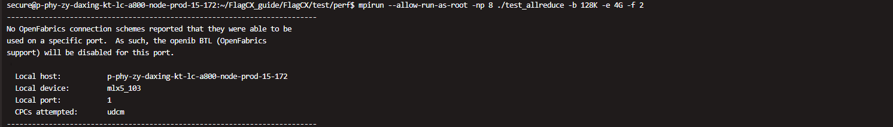
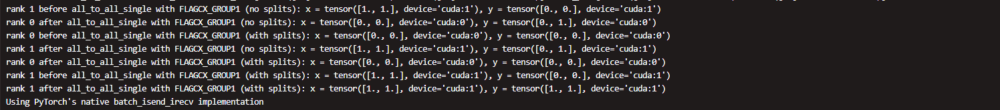
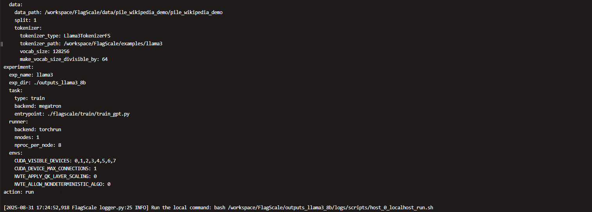

User Guide#
Environment configuration#
Refer to the environment setup section in the Getting Started page.
Installation and compilation#
Refer to Getting Started for FlagCX compilation and installation.
API Reference#
Device Handle Management#
FlagCX introduces a device handle API that separates device/CCL adaptor lifecycle from communicator management. The previous flagcxHandlerGroup approach is now deprecated.
New APIs (Recommended)#
// Initialize device handle — loads device/CCL adaptor plugins
flagcxResult_t flagcxDeviceHandleInit(flagcxDeviceHandle_t *devHandle);
// Free device handle — finalizes device/CCL adaptor plugins
flagcxResult_t flagcxDeviceHandleFree(flagcxDeviceHandle_t devHandle);
Usage pattern:
flagcxDeviceHandle_t devHandle;
flagcxDeviceHandleInit(&devHandle);
// ... use device operations (setDevice, getDeviceCount, etc.) ...
flagcxCommInitRank(&comm, nranks, uniqueId, rank);
// ... communication operations ...
flagcxCommDestroy(comm);
flagcxDeviceHandleFree(devHandle);
Deprecated APIs#
The following APIs are deprecated and will be removed in a future release:
// Deprecated - use flagcxDeviceHandleInit/Free instead
struct flagcxHandlerGroup {
flagcxUniqueId_t uniqueId;
flagcxComm_t comm;
flagcxDeviceHandle_t devHandle;
};
flagcxResult_t flagcxHandleInit(flagcxHandlerGroup_t *handler);
flagcxResult_t flagcxHandleFree(flagcxHandlerGroup_t handler);
Changed APIs#
// Parameter is now passed by value, not pointer
// Old: flagcxGetUniqueId(flagcxUniqueId_t *uniqueId);
// New:
flagcxResult_t flagcxGetUniqueId(flagcxUniqueId_t uniqueId);
Note: The caller must provide a valid pointer to a flagcxUniqueId struct.
Removed APIs#
The following API has been removed from the public interface:
flagcxCommFifoBuffer()— No longer part of public API
Homogeneous tests using FlagCX#
Communication API test#
Build and Installation
Refer to the Communication API test build and installation section in Getting Started.
Communication API Test
mpirun --allow-run-as-root -np 2 ./test_allreduce -b 128K -e 4G -f 2 -p 1
Description
test_allreduceis a performance benchmark for AllReduce operations built on MPI and FlagCX. Each MPI process is bound to a single GPU. The program runs warm-up iterations followed by timed measurements across a user-defined range of message sizes (minimum, maximum, and step).For every message size, the benchmark reports:
Average latency
Estimated bandwidth
Buffer fragments for correctness verification
For example, running
test_allreducewith 2 MPI processes on 2 GPUs starts from 128 KiB and doubles the message size each step (128 KiB, 256 KiB, 512 KiB, 1 MiB …) up to 4 GiB. For each size, the benchmark records bandwidth, latency, and correctness results.Correct Performance Test Output

Issues Encountered During Execution
During execution, you may see an assertion warning when OpenMPI attempts to establish a connection via InfiniBand (openib BTL) but cannot find an available CPC (Connection Protocol). In this case, the IB port is disabled automatically.This warning does not affect the performance test results.

Solution
To suppress this warning, disable
openiband fall back to TCP by adding the following option to yourmpiruncommand.--mca btl ^openib
MPI Error Warning
If you encounter an MPI error during execution, there are two possible solutions:
Check Local MPI Installation
Verify your local MPI installation path and set the appropriate environment variables.
Install MPI
If MPI is not installed or the local installation is not suitable, download and install MPI.
Follow the instructions below:
wget https://download.open-mpi.org/release/open-mpi/v4.1/openmpi-4.1.6.tar.gz tar -zxf openmpi-4.1.6.tar.gz cd openmpi-4.1.6 ##Configure and Build ./configure --prefix=/usr/local/mpi make -j$(nproc) sudo make install
Torch API test#
Build and installation
Refer to Getting Started for instructions on building and installing the Torch API test.
Torch API test execution
The test case is located in the build/installation directory.
cd ./example/example.py
The test script
run.shsets environment variables and device IDs according to the current platform. You may need to modify these variables to match your hardware setup.#!/bin/bash # Check if the debug flag is set if [ "$1" == "debug" ]; then export FLAGCX_DEBUG=INFO export FLAGCX_DEBUG_SUBSYS=ALL echo "FlagCX debug information enabled." else unset FLAGCX_DEBUG unset FLAGCX_DEBUG_SUBSYS echo "FlagCX debug information disabled." fi export FLAGCX_IB_HCA=mlx5 export FLAGCX_ENABLE_TOPO_DETECT=TRUE export FLAGCX_DEBUG=INFO export FLAGCX_DEBUG_SUBSYS=ALL export CUDA_VISIBLE_DEVICES=0,1 # Need to preload customized gloo library specified for FlagCX linkage # export LD_PRELOAD=/usr/local/lib/libgloo.so # export LD_PRELOAD=/usr/local/nccl/build/lib/libnccl.so export TORCH_DISTRIBUTED_DETAIL=DEBUG CMD='torchrun --nproc_per_node 2 --nnodes=1 --node_rank=0 --master_addr="localhost" --master_port=8281 example.py' echo $CMD eval $CMD
The arguments for
torchrunare as follows:nproc_per_node: Number of processes to launch on the current machine.nnodes: Total number of nodes participating in the training. For homogeneous mode testing, set this to 1.node_rank: The rank of the current node among all nodes, starting from 0. For homogeneous mode testing, set this to 0.master_addr: Address (hostname or IP) of the master node. For homogeneous mode testing, set this to"localhost"is okay. For heterogeneous mode testing, specify the reachable IP or hostname of the master node. It is assumed that the address is reachable from all nodes.master_port: Port used by the master node to establish the process group. All nodes must use the same port, and the port has to be available on all nodes.example.py: Torch API test script.Refer to FlagCX Environment Variables for the usage of the various
FLAGCX_XXXenvironment variables.
Sample screenshot from a correct performance test

Homogeneous training with FlagCX + FlagScale#
The following steps shows an example in which we run the LLaMA3-8B model on Nvidia A800 GPUs.
Build and installation
Refer to the Environment Setup and Build & Installation section in the Getting Started page.
Data preparation
cd FlagScale mkdir data
A small portion of processed data from the Pile dataset (bin and idx files) is provided:
pile_wikipedia_demo. Copy it to theFlagScale/datadirectory.Model configuration 1
cd FlagScale/examples/llama3/conf/ vi train.yaml
The directory contains the following files:
train/— Training scripts and related files.train.yaml— Configuration file for homogeneous trainingThe
train.yamlfile contains four main sections:defaults,experiment,action, andhydra. For most cases, you only need to modify thedefaultsandexperimentsections.Modify
defaultstrain: XXXX
Replace
XXXXwith8b.Modify
experimentexp_dir: ./outputs_llama3_8b
This specifies the output directory for distributed training results.
Modify
runnersettings underexperimenthostfile: For a homogeneous (single-node) mode test, comment out the
hostfileline. Only configure it for heterogeneous (multi-node) mode setups.envs: Set GPU device IDs using
CUDA_VISIBLE_DEVICES, for example:CUDA_VISIBLE_DEVICES: 0,1,2,3,4,5,6,7
train_hetero.yaml— Configuration file for heterogeneous training
Model Configuration 2
The model configuration files (
xxx.yaml) corresponding to different dataset sizes are located in theexamplesdirectory.cd FlagScale/examples/llama3/conf/train vi 8b.yaml
8b.yamlConfiguration FileThe
8b.yamlfile contains three main sections: system, model, and data.System Section
Add the following line to enable distributed training with FlagCX:
distributed_backend: flagcx
Model Section
Configure the training parameters.Use
train_samplesandglobal_batch_sizeto determine the number of steps:step = train_samples / global_batch_size
It is recommended to set it as an integer.
Data Section
Modify the following parameters:
data_path: Set this to the
cachedirectory under the data prepared in the previous step.tokenizer_path: Download the tokenizer from the official website corresponding to your model and set the path here.
Download tokenizer
Download the tokenizer corresponding to the model. The files are available at: Meta-LLaMA-3-8B-Instruct Tokenizer.
It is recommended to download the tokenizer via the command line. Place the downloaded tokenizer files in the path specified by
tokenizer_pathin your configuration (8b.yaml).For example:
cd FlagScale/examples/llama3 modelscope download --model LLM-Research/Meta-Llama-3-8B-Instruct [XXXX] --local_dir ./
The
[XXXX]in the above command refers to the tokenizer files corresponding to Meta-LLaMA-3-8B-Instruct. The content could be, for example:tokenizer.jsontokenizer_config.jsonconfig.jsonconfiguration.jsongeneration_config.json
These files should be placed in the directory specified by
tokenizer_pathin your configuration (8b.yaml).Distributed training
To start a distributed training:
cd FlagScale python run.py --config-path ./examples/llama3/conf --config-name train action=run
To stop the training:
python run.py --config-path ./examples/llama3/conf --config-name train action=stop
After starting distributed training, the configuration information will be printed, and a run script will be generated at:
flagscale/outputs_llama3_8b/logs/scripts/host_0_localhost_run.sh
The training output files can be found under
flagscale/outputs_llama3_8b.Notes:
You can inspect the run script to verify the commands and environment settings used for the training.
All logs and model checkpoints will be saved under the output directory.

Heterogeneous tests using FlagCX#
UniRunner mode#
FlagCX provides a unified heterogeneous communication mode called uniRunner, which implements 11 chip-decoupled collective communication algorithms. To enable uniRunner mode, set the following environment variable before launching your application:
export FLAGCX_USE_HETERO_COMM=1
UniRunner supports all standard collective operations (AllReduce, AllGather, ReduceScatter, Broadcast, Reduce, Gather, Scatter, AlltoAll, AlltoAllv, Send, Recv) across heterogeneous hardware.
For kernel-based communication with Device API (available on NVIDIA and Hygon), you also need:
export FLAGCX_MEM_ENABLE=1
Refer to FlagCX Environment Variables for the full list of UniRunner-specific configuration variables (prefixed with FLAGCX_UNIRUNNER_*).
One-sided RDMA operations#
FlagCX supports one-sided RDMA operations for heterogeneous communicators backed by RDMA-capable network adaptors. These operations require prior buffer registration.
Buffer Registration#
// Register a buffer for one-sided RDMA operations (Get/Put/PutValue)
// Collective: ALL ranks in the communicator must call
flagcxResult_t flagcxOneSideRegister(flagcxComm_t comm, void *buff, size_t size);
// Register a signal buffer for one-sided RDMA operations
// ptrType: FLAGCX_PTR_CUDA for device memory, FLAGCX_PTR_HOST for host-pinned memory
flagcxResult_t flagcxOneSideSignalRegister(flagcxComm_t comm, void *buff,
size_t size, int ptrType);
// Register a host-pinned staging buffer for PutValue operations
// Must be called after flagcxOneSideSignalRegister
flagcxResult_t flagcxOneSideStagingRegister(flagcxComm_t comm, void *buff,
size_t size);
Alternative registration via window:
// Allocate memory
flagcxMemAlloc(&ptr, size);
// Register as a window for one-sided operations
flagcxCommWindowRegister(comm, ptr, size, &win, FLAGCX_WIN_DEFAULT);
One-Sided API#
API |
Description |
|---|---|
|
RDMA READ: pull data from a remote peer’s buffer into local buffer |
|
RDMA WRITE: push data from local buffer to remote peer’s buffer |
|
Batch RDMA WRITE: optimized for multiple small transfers |
|
RDMA WRITE + ATOMIC: write data, then atomically increment a remote signal |
|
Write immediate value to remote buffer |
|
Signal only: atomically increment a remote signal |
|
Wait until a local signal reaches the expected value |
|
Read the current global RMA completion counter |
|
Block until the RMA completion counter reaches target |
Example - Async RDMA with completion counter:
uint64_t before;
flagcxReadCounter(comm, &before);
flagcxPut(comm, peer, srcOffset, dstOffset, size, srcMrIdx, dstMrIdx);
flagcxWaitCounter(comm, before + 1); // Wait for the Put to complete
Cleanup:
flagcxCommWindowDeregister(comm, win);
flagcxMemFree(ptr);
See flagcx/include/flagcx.h for the full API signatures and parameter documentation.
P2P Engine#
The FlagCX P2P Engine provides a point-to-point engine interface for one-sided RDMA operations, designed for integration with transfer frameworks such as NIXL.
Key Features#
Connection management (connect/accept to remote peers)
Memory registration for RDMA operations
One-sided READ/WRITE (RDMA Get/Put)
Vectored and batched operations
Two-sided send/recv
Notification system for out-of-band signaling
IPC helpers for intra-node GPU memory sharing
Engine Lifecycle#
// Create and initialize a P2P engine instance
FlagcxP2pEngine *flagcxP2pEngineCreate();
// Destroy the engine instance
void flagcxP2pEngineDestroy(FlagcxP2pEngine *engine);
// Stop the accept thread
void flagcxP2pEngineStopAccept(FlagcxP2pEngine *engine);
Connection Management#
// Connect to a remote peer
FlagcxP2pConn *flagcxP2pEngineConnect(FlagcxP2pEngine *engine,
const char *ipAddr, int remoteGpuIdx,
int remotePort, bool sameProcess);
// Accept an incoming connection (blocking)
FlagcxP2pConn *flagcxP2pEngineAccept(FlagcxP2pEngine *engine, char *ipAddrBuf,
size_t ipAddrBufLen, int *remoteGpuIdx);
// Check if connection is intra-node (IPC-eligible)
bool flagcxP2pEngineConnIsLocal(FlagcxP2pConn *conn);
Memory Registration#
// Register a memory region for RDMA
int flagcxP2pEngineReg(FlagcxP2pEngine *engine, uintptr_t data, size_t size,
FlagcxP2pMr &mrId);
// Deregister a memory region
void flagcxP2pEngineMrDestroy(FlagcxP2pEngine *engine, FlagcxP2pMr mr);
// Prepare RDMA descriptor for a registered region
int flagcxP2pEnginePrepareDesc(FlagcxP2pEngine *engine, FlagcxP2pMr mr,
const void *data, size_t size, char *descBuf);
One-Sided Operations#
// One-sided read (non-blocking)
int flagcxP2pEngineRead(FlagcxP2pConn *conn, FlagcxP2pMr mr, const void *data,
size_t size, FlagcxP2pRdmaDesc desc,
uint64_t *transferId);
// One-sided write (non-blocking)
int flagcxP2pEngineWrite(FlagcxP2pConn *conn, FlagcxP2pMr mr, const void *data,
size_t size, FlagcxP2pRdmaDesc desc,
uint64_t *transferId);
// Check transfer completion
bool flagcxP2pEngineXferStatus(FlagcxP2pConn *conn, uint64_t transferId);
See environment-variables.md for P2P Engine configuration variables (FLAGCX_P2P_*).
NCCL wrapper plugin#
For NVIDIA platforms, FlagCX provides an NCCL wrapper plugin that builds a drop-in libnccl.so. This allows any NCCL-based application (PyTorch, DeepSpeed, Megatron-LM) to transparently use FlagCX without code changes:
# Build the wrapper
cd FlagCX/plugin/nccl
make NCCL_HOME=/path/to/nccl CUDA_HOME=/path/to/cuda
# Use with any NCCL application
LD_PRELOAD=./build/lib/libnccl.so python your_training_script.py
The wrapper intercepts NCCL API calls and routes them through FlagCX. A thread-local recursive guard prevents infinite recursion when FlagCX’s internal NCCL adaptor calls back into NCCL.
Prerequisites: FlagCX built and installed, CUDA toolkit, real NCCL >= 2.21.0 (versions 2.21 through 2.27 supported). See plugin/nccl/README.md for full details.
Communication API test#
Build and Installation
Refer to the Getting Started documentation for instructions on environment setup, creating symbolic links, and how to build and install the software.
Verify MPICH Installation
To check if MPICH has been installed:
cd /workspace/mpich-4.2.3
Makefile and environment variable configuration
# Navigate to the Communication API test directory cd /root/FlagCX/test/perf # Open the Makefile vi Makefile # Modify the MPI path to match the one used in step 2 MPI_HOME ?= /workspace/mpich-4.2.3/build/ :q # Save and exit # Configure environment variables export LD_LIBRARY_PATH=/workspace/mpich-4.2.3/build/lib:$LD_LIBRARY_PATHHeterogeneous Communication API Test
Ensure that Host 1, Host 2, … are all configured as described above and can correctly run the homogeneous Communication API test on their respective platforms.
Verify that the ports on Host 1, Host 2, … are
<xxx>and keep them consistent across all hosts.Before running the heterogeneous Communication API test script on Host 1, configure the port number environment variable:
export HYDRA_LAUNCHER_EXTRA_ARGS="-p 8010"
Here,
8010should match the configuration set during SSH passwordless login.Run the heterogeneous Communication API test script on Host 1:
./run.sh
/workspace/mpich-4.2.3/build/bin/mpirun \ -np 2 -hosts 10.1.15.233:1,10.1.15.67:1 \ -env PATH=/workspace/mpich-4.2.3/build/bin \ -env LD_LIBRARY_PATH=/workspace/mpich-4.2.3/build/lib:/root/FlagCX/build/lib:/usr/local/mpi/lib/:/opt/maca/ompi/lib \ -env FLAGCX_IB_HCA=mlx5 \ -env FLAGCX_ENABLE_TOPO_DETECT=TRUE \ -env FLAGCX_DEBUG=INFO \ -env FLAGCX_DEBUG_SUBSYS=INIT \ /root/FlagCX/test/perf/test_allreduce -b 128K -e 4G -f 2 -w 5 -n 100 -p 1`
Refer to FlagCX Environment Variables for the meaning and usage of
FLAGCX_XXXenvironment variables.
Note: When using two GPUs per node in the heterogeneous Communication API test, some warnings may indicate that each node only has 1 GPU active. In this case, FlagCX will skip GPU-to-GPU AllReduce and fall back to host-based communication.
As a result, GPU utilization may show 0%, and the overall AllReduce runtime may be much longer.
However, the computation results are correct, and this behavior is expected.
To fully utilize GPU acceleration for heterogeneous testing, use 2+2 GPUs (4 GPUs total) across the nodes.